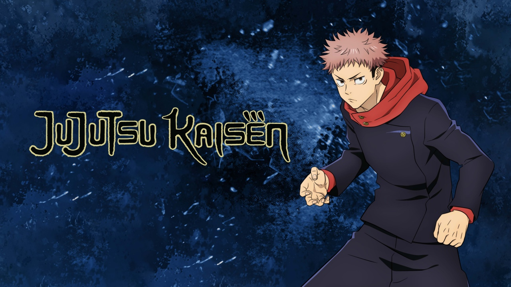
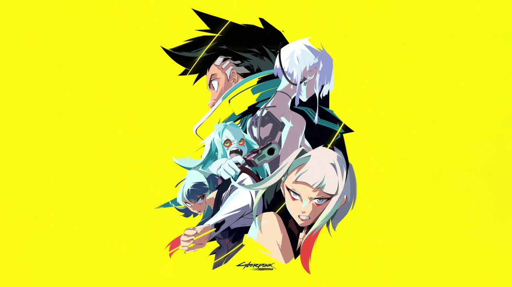
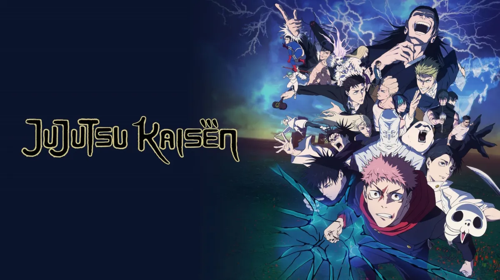
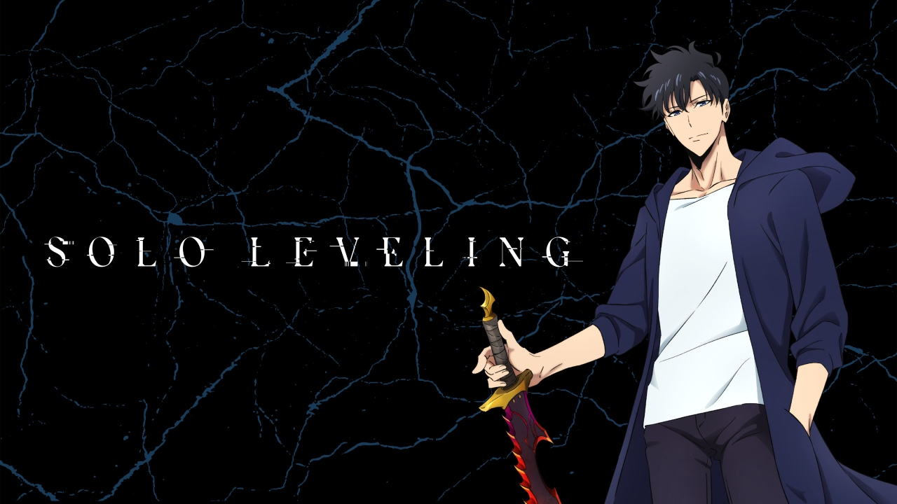

AOTY 2020
Demon Slayer:Kimetsu no Yaiba
- Release Year: April 2019
- Studio: Ufotable
- Genre: Adventure, Dark Arts, Fantasy
- Seasons: 4(63 episodes)

AOTY 2021
Jujutsu Kaisen
- Release Year: October 2020
- Studio: MAPPA
- Genre: Adventure, Dark Arts, Fantasy
- Seasons: 3(59 episodes)
AOTY 2022
Attack on Titan:Final Season
- Release Year: April 2013
- Studio: Wit Studio, MAPPA
- Genre: Adventure, Dark Arts, Post-apocalyptic
- Seasons: 4(94 episodes)

AOTY 2023
Cyberpunk:Edgerunners
- Release Year: SEPTEMBER 2022
- Studio: TRIGGER
- Genre: Cyberpunk
- Seasons: 1(10 episodes)

AOTY 2024
Jujutsu Kaisen:Season 2
- Release Year: October 2020
- Studio: MAPPA
- Genre: Adventure, Dark Arts, Fantasy
- Seasons: 3(59 episodes)

AOTY 2025
Solo Levelling: Season 2
- Release Year: March 2024
- Studio: A-1 Pictures
- Genre: Action, Fantasy, Adventure
- Seasons: 2(25 episodes)